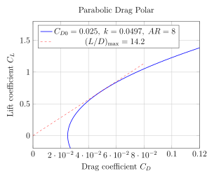
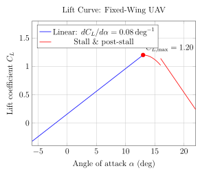
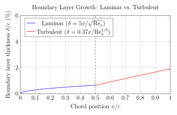

Chapter 3: Aerodynamics for UAVs¶
3.1 Fundamentals of Aerodynamics¶
Aerodynamics underpins every aspect of UAV design, from the selection of an airfoil profile through to the prediction of flutter boundaries at high speed. This chapter develops the governing equations of fluid mechanics from first principles, introduces the non-dimensional parameters that govern flow regimes, and progressively applies the theory to fixed-wing, rotary-wing, and multirotor UAV configurations. Where appropriate, modern computational approaches are described alongside classical analytical methods.
3.1.1 Governing Equations of Fluid Mechanics¶
The motion of a Newtonian fluid is completely described by the conservation laws of mass, linear momentum, and energy. For a compressible, viscous fluid the differential (strong) forms of these laws are presented below.
Continuity Equation¶
The conservation of mass for an arbitrary control volume, in the absence of mass sources or sinks, yields
where \(\rho\) is the fluid density (kg/m³) and \(\mathbf{u} = (u, v, w)^{\mathsf{T}}\) is the velocity vector (m/s). In Cartesian index notation,
For incompressible flow (\(\rho = \text{const}\)) the equation reduces to the divergence-free condition \(\nabla \cdot \mathbf{u} = 0\), which is an excellent approximation for UAVs operating below Mach 0.3.
Euler Equations¶
Neglecting viscous stresses, the momentum balance gives the Euler equations:
where \(p\) is the static pressure and \(\mathbf{g}\) is gravitational body force. In component form,
The Euler equations capture inviscid aerodynamics and are appropriate for exterior high-Reynolds-number flows away from solid walls.
Navier–Stokes Equations¶
Reinstating the viscous stress tensor \(\tau_{ij}\) for a Newtonian fluid,
the full compressible Navier–Stokes momentum equations become
where \(D/Dt = \partial/\partial t + u_j \,\partial/\partial x_j\) is the material (substantial) derivative and \(\mu\) is the dynamic viscosity (Pa s). The energy equation closes the system:
where \(e\) is specific internal energy, \(k\) is thermal conductivity, \(T\) is temperature, and \(\dot{q}\) is volumetric heat generation. For a calorically perfect gas \(e = c_v T\) and \(p = \rho R T\).
The Navier–Stokes equations have no general closed-form solution; they are solved numerically using Reynolds-Averaged Navier–Stokes (RANS), Large-Eddy Simulation (LES), or Direct Numerical Simulation (DNS) methods detailed in Section 3.8.
3.1.2 Bernoulli’s Equation and Its Limitations¶
Integrating the steady, inviscid, incompressible Euler equation along a streamline yields Bernoulli’s equation:
where \(V = |\mathbf{u}|\) is the local flow speed and \(z\) is altitude. The dynamic pressure \(q_\infty = \tfrac{1}{2}\rho_\infty V_\infty^2\) is the fundamental scaling parameter for aerodynamic forces. The total (stagnation) pressure is
Limitations. Bernoulli’s equation is strictly valid only along a single streamline in steady, inviscid, incompressible, irrotational flow. It fails in boundary layers (viscosity dominates), separated regions, and compressible flows above \(\mathrm{Ma} \approx 0.3\). For compressible isentropic flow the correct relation is
with \(\gamma = 1.4\) for air and \(\mathrm{Ma} = V/a\) the Mach number.
3.1.3 Dimensional Analysis: Reynolds and Mach Numbers¶
Two non-dimensional parameters govern UAV aerodynamics over the full speed range of interest.
Reynolds Number¶
The Reynolds number characterises the ratio of inertial to viscous forces:
where \(L\) is the characteristic length (chord \(c\) for airfoils, rotor diameter \(D\) for propellers), \(\mu\) is dynamic viscosity, and \(\nu = \mu/\rho\) is the kinematic viscosity (1.46×10⁻⁵ m²/s at ISA sea level). At standard conditions (\(\rho = 1.225\,\text{kg/m³}\), \(\mu = 1.789×10⁻⁵\,\text{Pa s}\)):
-
Nano UAVs (chord 20 mm, \(V = 5\,\text{m/s}\)): \(\mathrm{Re} \approx 7{,}000\)
-
Small fixed-wing (chord 150 mm, \(V = 20\,\text{m/s}\)): \(\mathrm{Re} \approx 200{,}000\)
-
Medium MALE UAV (chord 1.0 m, \(V = 60\,\text{m/s}\)): \(\mathrm{Re} \approx 4 \times 10^6\)
-
Full-scale aircraft: \(\mathrm{Re} = 10^7\)–\(10^8\)
Mach Number¶
The Mach number characterises compressibility effects:
where \(a\) is the local speed of sound (340.3 m/s at ISA sea level) and \(R = 287\,\text{J/(kg K)}\) for air. Flow regimes are classified in Table 3.1.
| Regime | Mach Range | Dominant Physics | UAV Relevance |
|---|---|---|---|
| Incompressible | \(\mathrm{Ma} < 0.3\) | Viscosity, separation | Most small UAVs |
| Subsonic | \(0.3 < \mathrm{Ma} < 0.8\) | Wave-free compressibility | MALE/HALE UAVs |
| Transonic | \(0.8 < \mathrm{Ma} < 1.2\) | Shock + boundary layer | High-speed UAVs |
| Supersonic | \(1.2 < \mathrm{Ma} < 5\) | Oblique/normal shocks | Supersonic targets |
| Hypersonic | \(\mathrm{Ma} > 5\) | Real gas, ablation | Boost-glide vehicles |
3.1.4 Boundary Layer Theory¶
The boundary layer is the thin region adjacent to a solid surface where viscosity reduces the velocity from the freestream value \(V_\infty\) to zero at the wall (no-slip condition). Prandtl’s boundary layer equations for a 2-D steady incompressible flow are
Laminar Boundary Layer¶
For the Blasius solution over a flat plate (\(dp/dx = 0\)), the boundary layer thickness \(\delta\), displacement thickness \(\delta^*\), and momentum thickness \(\theta\) are
with local friction coefficient \(C_f = 0.664/\sqrt{\mathrm{Re}_x}\) and integrated skin-friction drag coefficient \(C_{Df} = 1.328/\sqrt{\mathrm{Re}_L}\).
Turbulent Boundary Layer¶
The turbulent boundary layer grows faster. An empirical power-law profile gives
The transition from laminar to turbulent typically occurs at \(\mathrm{Re}_{x,\text{tr}} \approx 3 \times 10^5\)–\(10^6\) for smooth surfaces with low freestream turbulence intensity. At the low Reynolds numbers characteristic of small UAVs, transition can occur through a laminar separation bubble (LSB) mechanism: the laminar boundary layer separates, transitions in the free shear layer, then reattaches as turbulent flow.
Boundary Layer Separation¶
Separation occurs when the adverse pressure gradient \(dp/dx > 0\) reduces the wall shear stress to zero:
Beyond the separation point, reversed flow and a wake region develop, causing a large increase in pressure drag. On UAV airfoils, separation typically first appears near the trailing edge and advances toward the leading edge as angle of attack increases, ultimately producing stall.
3.1.5 Drag Components¶
The total aerodynamic drag on a UAV body is the sum of several physically distinct mechanisms:
expressed as non-dimensional drag coefficients referenced to wing area \(S\) and dynamic pressure \(q_\infty\):
Pressure drag (form drag) arises from the asymmetric pressure distribution around a body due to boundary layer growth and separation. Streamlined bodies have low form drag.
Friction drag is the integrated wall shear stress over wetted area:
Induced drag is a consequence of lift generation on a finite wing and is derived in the referenced section.
Wave drag appears only in transonic and supersonic flows (\(\mathrm{Ma} > 0.7\) for sweep-back wings) and represents energy carried away by shock waves.
3.1.6 Lift Generation: Kutta–Joukowski Theorem¶
For inviscid flow, the circulation \(\Gamma\) around an airfoil is defined by
and the Kutta–Joukowski theorem gives lift per unit span:
For a finite wing of span \(b\), with spanwise circulation distribution \(\Gamma(y)\), the total lift is
The Kutta condition — flow leaves the trailing edge smoothly — determines the unique value of \(\Gamma\) for a given geometry and angle of attack.
3.2 Airfoil Aerodynamics¶
3.2.1 NACA 4-Digit Series Geometry¶
The NACA 4-digit series (e.g., NACA 2412: 2% camber at 40% chord, 12% thickness) is defined analytically. The mean camber line \(y_c(x)\) for \(0 \leq x \leq c\) is
where \(m\) is the maximum camber as a fraction of chord (first digit/100) and \(p\) is the chordwise location of maximum camber (second digit/10). The symmetric thickness distribution \(y_t(x)\) is
where \(t\) is the maximum thickness-to-chord ratio (last two digits/100). Upper and lower surface coordinates are obtained by normal displacement from the camber line:
where \(\theta = \arctan(dy_c/dx)\) is the local camber line slope.
3.2.2 NACA 5-Digit and 6-Series¶
The NACA 5-digit series (e.g., NACA 23012) uses a reflexed camber line to move the maximum camber closer to the leading edge, improving lift near stall. The camber line ahead of the inflection point \(r\) is
with tabulated values of \(k_1\) and \(r\) for each first-digit code.
The NACA 6-series (e.g., NACA 633-218) was designed to maintain extensive laminar flow by specifying a favourable pressure gradient over a designated laminar bucket. The subscript indicates the chordwise position (in tenths) of the minimum pressure, effectively defining the range of \(C_L\) over which low drag persists. The resultant drag polar exhibits a characteristic “bucket” shape:
3.2.3 Thin Airfoil Theory: Lift Curve Slope¶
For a thin airfoil in inviscid 2-D incompressible flow, the lift coefficient varies linearly with angle of attack \(\alpha\):
giving a theoretical lift curve slope
Accounting for finite thickness and compressibility via the Prandtl–Glauert correction:
The zero-lift angle for a cambered airfoil is
which evaluates to \(\alpha_{L=0} \approx -2m/\pi\) radians for small camber \(m\) (in chord fractions).
3.2.4 Stall Characteristics¶
Stall occurs when the boundary layer separates irreversibly from the suction surface. The maximum lift coefficient \(C_{l,\max}\) and stall angle \(\alpha_{\text{stall}}\) depend on Reynolds number, airfoil geometry, and surface roughness. Three stall types are identified:
-
Trailing-edge stall (thick airfoils, NACA 44xx): gradual separation propagates from trailing edge forward; gentle \(C_l\) drop.
-
Leading-edge stall (thin, moderately cambered, \(t/c < 0.09\)): abrupt laminar separation bubble bursts; sharp \(C_l\) drop; dangerous.
-
Thin-airfoil stall (\(t/c < 0.06\)): separation from leading edge at low \(\alpha\); gradual reattachment produces rounded peak.
Typical values: \(\alpha_{\text{stall}} = 12\)–\(16^\circ\), \(C_{l,\max} = 1.2\)–\(1.8\) for unflapped NACA profiles.
3.2.5 The Drag Polar¶
The drag polar relates \(C_D\) to \(C_L\) for a complete aircraft or isolated airfoil. In the simplest parabolic form:
where \(C_{D0}\) is the zero-lift drag coefficient (skin friction + form drag), \(e\) is Oswald’s efficiency factor (\(0.75\)–\(0.95\)), and \(\mathit{AR} = b^2/S\) is the aspect ratio. The optimum lift-to-drag ratio and corresponding \(C_L\) are
For a typical medium UAV with \(C_{D0} = 0.025\), \(e = 0.80\), \(\mathit{AR} = 8\): \(k = 0.0497\), \((L/D)_{\max} \approx 14.2\) at \(C_{L,\text{opt}} \approx 0.71\).

3.2.6 Low-Reynolds-Number Airfoils for UAVs¶
At \(\mathrm{Re} < 5 \times 10^5\), conventional NACA sections perform poorly due to laminar separation bubbles and premature stall. Several profile families have been developed specifically for this regime.
Eppler profiles. The E387 (\(t/c = 9.1\%\), design \(C_l = 0.6\), \(\mathrm{Re} = 2 \times 10^5\)) is a benchmark low-Re airfoil with a pre-stall \(L/D \approx 60\) and gentle stall characteristics. The E193 targets higher lift with \(C_{l,\max} \approx 1.4\) at similar Reynolds numbers.
Selig profiles. The S1223 (\(t/c = 12.1\%\)) achieves \(C_{l,\max} \approx 2.19\) at \(\mathrm{Re} = 2 \times 10^5\) by exploiting a large leading-edge radius and extreme camber (8.7%), making it suitable for slow-flight loitering UAVs. The SD7037 (\(t/c = 9.2\%\)) offers superior cruise efficiency with a broad laminar bucket \(0.3 \leq C_l \leq 0.8\) at \(\mathrm{Re} = 10^5\)–\(10^6\).
Effect of Reynolds number on profile performance. As \(\mathrm{Re}\) decreases below \(10^5\), the laminar separation bubble grows in length, increasing form drag dramatically. The bubble can occupy 20–50% of chord, acting as an effective increase in airfoil thickness. This produces a characteristic “drag bucket collapse” — the low-drag range narrows or disappears entirely below \(\mathrm{Re} \approx 6 \times 10^4\).
Table 3.2 summarises performance data for key UAV airfoils.
| Profile | \(t/c\) (%) | Design Re | \(C_{l,\max}\) | \((L/D)_{\max}\) | Best Application |
|---|---|---|---|---|---|
| NACA 2412 | 12.0 | \(3\times10^6\) | 1.50 | 55 | General aviation (reference) |
| E387 | 9.1 | \(2\times10^5\) | 1.20 | 60 | Long-endurance small UAV |
| E193 | 11.8 | \(2\times10^5\) | 1.40 | 52 | High-lift small UAV |
| S1223 | 12.1 | \(2\times10^5\) | 2.19 | 40 | Slow-flight/loitering UAV |
| SD7037 | 9.2 | \(3\times10^5\) | 1.10 | 65 | Cruise efficiency UAV |
| Eppler 420 | 11.7 | \(1\times10^5\) | 1.63 | 38 | Nano/micro UAV |
3.3 Wing Aerodynamics¶
3.3.1 Prandtl Lifting-Line Theory¶
For a finite wing of span \(b\), Prandtl’s lifting-line theory distributes trailing vortices along the span. The circulation \(\Gamma(y)\) satisfies the integro-differential equation
where \(a_0 = 2\pi\) is the 2-D lift slope, \(\bar{c}(y)\) is local chord, and the integral represents the downwash induced by the trailing vortex sheet. Substituting a Fourier series \(\Gamma(y) = 4bV_\infty \sum_{n=1}^{N} A_n \sin(n\theta)\) where \(y = -(b/2)\cos\theta\) converts the integral equation to a set of linear algebraic equations solvable for coefficients \(A_n\).
The total lift and induced drag coefficients are then
For the elliptic spanwise load distribution, \(\delta = 0\) and Oswald’s efficiency \(e = 1\). This is the theoretical minimum induced drag:
3.3.2 Aspect Ratio Effects¶
The finite-wing lift curve slope, accounting for induced downwash, is
which shows that increasing \(\mathit{AR}\) drives \(a\) toward the 2-D limit \(a_0 = 2\pi\,\text{r a d { - 1 }}\). In practice, for \(\mathit{AR} = 6\)–\(12\), the 3-D slope is typically \(0.065\)–\(0.090\,\text{d e g { - 1 }}\). High aspect-ratio wings are favoured for endurance UAVs (e.g., Global Hawk, \(\mathit{AR} = 25\)) because induced drag dominates at high \(C_L\):
3.3.3 Spanwise Load Distributions¶
For a linearly tapered wing (taper ratio \(\lambda = c_{\text{tip}}/c_{\text{root}}\)), the spanwise lift distribution departs from elliptic. Optimum \(\lambda \approx 0.45\) minimises the deviation from elliptic for unswept wings. The load distribution affects both induced drag and the onset of tip stall — a critical safety consideration for UAVs without washout twist.
The Schrenk approximation blends the actual chord distribution with the elliptic distribution to give an estimate of the spanwise lift:
where \(c_{\text{elliptic}}(y) = (4S/\pi b)\sqrt{1-(2y/b)^2}\).
3.3.4 Winglets¶
A winglet is a near-vertical or canted tip extension that diffuses the tip vortex, reducing the peak induced velocity. The effective span increase from a winglet of height \(h\) and cant angle \(\psi\) is
where \(k_w = 0.90\)–\(0.95\) accounts for structural non-ideality. The resulting induced drag reduction is
At UAV scale, winglets also improve roll authority in crosswind and reduce tip vortex hazard for swarm operations.
3.3.5 Wing Sweep¶
Sweep angle \(\Lambda\) reduces the effective component of freestream velocity normal to the leading edge by \(\cos\Lambda\), delaying the onset of wave drag and permitting higher cruise Mach numbers. The effective aerodynamic chord is
The lift curve slope of a swept, finite wing (Kuchemann approximation):
Forward sweep (\(\Lambda < 0\)) can delay stall to higher \(\alpha\) but introduces aeroelastic divergence risk (see Section 24.10).
3.3.6 Wing Area Sizing and Stall Speed¶
Wing area \(S\) is determined from the stall speed requirement. At stall, all lift must come from the maximum lift coefficient:
where \(W\) is the maximum take-off weight. Rearranging, the required wing area for a target stall speed is
Wing loading \(W/S\) (N/m² or kg/m²) is a fundamental design parameter: high \(W/S\) favours cruise speed and gust insensitivity; low \(W/S\) favours endurance and slow-flight capability. Typical values are given in Table 3.3.
| UAV Class | \(W/S\) (N/m²) | \(AR\) | \(V_{\text{cruise}}\) (m/s) | Mission |
|---|---|---|---|---|
| Nano MAV | 30–80 | 3–5 | 4–8 | Indoor/micro recon |
| Small tactical | 100–250 | 6–10 | 15–25 | ISR, small payload |
| Medium MALE | 400–800 | 10–20 | 50–80 | Long endurance ISR |
| High-alt HALE | 200–450 | 20–30 | 70–100 | Persistent surveillance |
| Combat UCAV | 1000–2500 | 3–6 | 150–250 | Strike, air superiority |
3.3.7 High-Lift Devices¶
Flaps and slats increase \(C_{L,\max}\) to reduce take-off and landing field length. The Fowler flap increases both camber and effective wing area, providing the largest lift increment:
where \(K_f \approx 0.5\)–\(0.7\) is a flap effectiveness correction. A leading- edge slat can add \(\Delta C_{L,\max} \approx 0.3\)–\(0.5\) by energising the boundary layer and delaying leading-edge stall.
3.4 UAV-Specific Aerodynamics¶
3.4.1 Low-Reynolds-Number Regime¶
UAVs with chord Reynolds numbers \(10^3 \leq \mathrm{Re} \leq 10^5\) experience flow phenomena that are absent in conventional aircraft aerodynamics. In this regime, the boundary layer is predominantly laminar and highly susceptible to adverse pressure gradients.
Laminar separation bubble (LSB). The laminar boundary layer separates near the location of minimum pressure on the suction surface. The resulting free shear layer transitions to turbulence, and if sufficient momentum is available, the turbulent flow reattaches — forming a short LSB. At lower Reynolds numbers or higher adverse gradients, reattachment fails and long-bubble or open separation occurs, causing abrupt stall. The chordwise extent of the LSB, \(x_{\text{sep}}\) to \(x_{\text{reatt}}\), can be estimated from
where \(A \approx 2\)–\(5\) for typical UAV profiles.
3.4.2 Transition Prediction Methods¶
Michel criterion. An empirical correlation for natural transition on airfoils:
where \(\mathrm{Re}_\theta = V_\infty \theta / \nu\) is the momentum-thickness Reynolds number. Transition is predicted where this criterion is first satisfied.
\(e^N\) (envelope) method. Based on linear stability theory, the local amplification rate of Tollmien–Schlichting waves is integrated along the boundary layer:
where \(\alpha_i\) is the spatial growth rate. Transition is predicted when \(N\) exceeds a threshold \(N_{\text{tr}} \approx 7\)–\(12\) (depending on freestream turbulence level). XFOIL implements the \(e^N\) method with user-specified \(N_{\text{crit}}\).
3.4.3 Drag Reduction Strategies¶
For small UAVs where friction drag is dominant, surface finish quality is critical. The transitional roughness Reynolds number is
where \(k_s\) is the effective sand-grain roughness. For a boundary layer travelling at \(V_\infty = 20\,\text{m/s}\) at ISA SL:
Surface finishes smoother than \(0.44\) mm do not further reduce friction drag in this flow regime. Junction fairings at wing-body and strut-wing intersections can reduce interference drag by 20–40% by preventing corner flow separation.
3.4.4 Propeller–Wing Interaction¶
Tractor configuration propeller slipstream accelerates and rotates the inflow over the inboard wing. The dynamic pressure in the slipstream is
giving a local lift coefficient enhancement factor of \(q_s / q_\infty\). The net effect on wing \(C_{L,\max}\) can be \(+5\)–\(+20\%\) depending on propeller disk-to-wing-area ratio. The rotational component of the slipstream creates an asymmetric lift distribution and yawing moment that must be trimmed by the vertical tail.
3.4.5 Ground Effect¶
When a wing operates within approximately one wingspan from the ground (\(h < b\)), the image vortex system reduces the effective downwash angle, decreasing induced drag. The Prandtl ground effect factor is
giving induced drag in ground effect \(C_{D,i}^{GE} = \phi\, C_{D,i}\). At \(h = b/4\): \(\phi = 0.5\), halving induced drag. This enables higher-than- normal \(C_L\) during take-off roll and landing flare. For multirotor systems the ground effect is quite different and is discussed in Section 3.6.4.
3.4.6 Gust Response¶
A discrete vertical gust of velocity \(w_g\) changes the effective angle of attack by \(\Delta\alpha = \arctan(w_g/V_\infty) \approx w_g/V_\infty\). The incremental load factor is
where \(K_g\) is the gust alleviation factor accounting for the aircraft’s dynamic response:
For small low-inertia UAVs \(\mu_g\) is typically small, giving \(K_g \approx 0.60\)–\(0.75\), whereas for a full-scale transport \(K_g \approx 0.88\). Gust intensities from FAR Part 23 equivalent standards: \(w_g = 15.2\,\text{m/s}\) (50 fps) at \(V_C\) for \(h < 6100\,\text{m}\).
3.5 Rotor and Propeller Aerodynamics¶
3.5.1 Actuator Disk Theory¶
The actuator disk is the simplest model of a rotor: an infinitely thin disk of area \(A = \pi R^2\) imparting a uniform pressure jump \(\Delta p\) to the passing flow. Momentum theory gives, in hover:
where \(v_i\) is the disk-plane induced velocity and the exit velocity is \(v_e = 2v_i\) (far wake). The induced velocity is therefore
Ideal induced power in hover:
In axial climb at velocity \(V_c\), the generalised momentum equation gives
In forward flight at speed \(V_\infty\) and disk tilt \(\alpha_d\):
which is solved iteratively.
3.5.2 Figure of Merit¶
The Figure of Merit (FM) compares actual rotor hover efficiency to the ideal actuator disk power:
For well-designed propellers at optimal collective pitch: \(\mathrm{FM} = 0.70\)–\(0.85\). Losses arise from tip vortex non-uniformity, swirl in the slipstream, and blade profile drag.
3.5.3 Blade Element Theory¶
Blade element theory (BET) divides each blade into radial strips of width \(dr\) and computes local aerodynamic forces using 2-D airfoil characteristics evaluated at the local relative velocity and angle of attack.
At radius \(r\) on a blade rotating at angular velocity \(\Omega\):
The inflow angle \(\phi\), blade pitch \(\theta\), and effective angle of attack \(\alpha_e\) are
Elemental thrust and torque per blade:
Integrating over all \(N_b\) blades and radius \(0\) to \(R\):
3.5.4 Combined BEMT¶
Blade element momentum theory (BEMT) couples BET with annular momentum theory to determine the induction factor \(a\) (axial) and \(a'\) (swirl) iteratively. Defining the non-dimensional inflow ratio \(\lambda = V_P/(\Omega R)\) and local solidity \(\sigma(r) = N_b c(r) / (2\pi r)\):
with the momentum equation providing
equated to yield \(a(r)\) at each radial station. The iteration is:
-
Assume uniform \(a\); compute \(\phi\) and \(\alpha_e\); look up \(C_l\), \(C_d\).
-
Update \(a\) from Eq. (3.78).
-
Repeat until \(\|\Delta a\| < 10^{-6}\).
3.5.5 Propeller Efficiency and Performance Coefficients¶
Propeller performance is characterised by non-dimensional advance ratio, thrust coefficient, and power coefficient:
where \(n\) is rotational speed in r e v/s. Maximum efficiency \(\eta_p \approx 0.80\)–\(0.88\) for well-designed UAV propellers.
3.5.6 Prandtl Tip-Loss Factor¶
Blade tip vortices prevent the lift from reaching the theoretical value near the tip. The Prandtl tip-loss factor \(F\) reduces the effective momentum in each annular element:
Including \(F\) in the BEMT equations, effective thrust is reduced by 5–15% relative to ideal, with larger losses for lower blade numbers and higher inflow angles.
3.5.7 Coaxial Rotors¶
A coaxial rotor pair produces more thrust per unit footprint than a single rotor of the same total diameter, but suffers aerodynamic interference between upper and lower disks. The lower rotor operates in the wake of the upper and sees an increased inflow velocity \(v_{i,L} = v_{i,U} + \Delta v\). The combined figure of merit is approximately
meaning coaxial systems are roughly 20% less efficient than a single equivalent rotor. Optimum spacing between rotors is \(s/R \approx 0.10\)–\(0.15\) to balance aerodynamic efficiency against mechanical complexity.
3.5.8 Propeller Noise¶
Propeller noise consists of tonal and broadband components. Tonal noise (at blade passage frequency \(f_{\text{BPF}} = N_b n\)) is generated by thickness noise and loading noise. The Ffowcs Williams–Hawkings equation covers all sources:
where subscripts \(T\), \(L\), \(Q\) denote thickness, loading (dipole), and quadrupole sources respectively. Dominant for UAV propellers:
-
Tip speed: OASPL \(\propto V_{\text{tip}}^5\); reducing RPM by 10% cuts noise by \(\sim\)5 dB.
-
Blade count: Increasing from 2 to 3 blades raises BPF by 50% but reduces per-blade loading, often giving net noise reduction.
-
Blade loading: High \(C_T\) causes strong tip vortices and high loading noise.
-
Vortex interaction: BVI noise from rotor-wake interaction is most severe at low descent rates (\(V_d/v_i \approx 0\)–\(1\)).
3.6 Multirotor Aerodynamics¶
3.6.1 Individual Rotor in Forward Flight¶
A multirotor rotor in forward flight at speed \(V_\infty\) experiences an asymmetric inflow: the advancing side (\(\psi = 90^\circ\)) has a higher relative velocity than the retreating side (\(\psi = 270^\circ\)). For a rotor of radius \(R\) at advance ratio \(\mu = V_\infty/(\Omega R)\):
causing an azimuthal variation in elemental thrust \(dT \propto V_{\text{rel}}^2\). Without compensation, this produces a rolling moment that must be cancelled by differential RPM or, in helicopters, by cyclic pitch.
3.6.2 Blade Flapping¶
In articulated rotor systems the blade can flap about a hinge at the hub. The flap angle \(\beta(\psi)\) equilibrates the aerodynamic moment and centrifugal restoring moment:
where \(I_b\) is the blade flapping moment of inertia and \(\beta_0\) is the precone angle. For a rigid multirotor blade (no hinge), the structural loads from the gyroscopic flapping moment must be absorbed by the arm, which must be designed accordingly.
3.6.3 Retreating Blade Stall¶
As advance ratio increases, the retreating blade at \(\psi = 270^\circ\) requires a higher blade pitch to maintain roll equilibrium. Stall occurs when
The maximum advance ratio before retreating blade stall is approximately \(\mu_{\max} \approx 0.35\)–\(0.50\) for conventional rotors, corresponding to forward speeds of \(\sim\)60–90 m/s for typical UAV-scale rotors.
3.6.4 Ground Effect on Multirotors¶
For a multirotor operating in ground effect at height \(h\) above the surface, each rotor independently forms an image system. The interaction is complex and differs from the fixed-wing case. Empirically, the thrust increase in ground effect can be expressed as
valid for \(h > R\). At \(h = 2R\): thrust increases by \(\approx 6.7\%\). At very low heights (\(h < 0.5R\)), ground vortex recirculation can degrade performance.
3.6.5 Aerodynamic Coupling in Crosswind¶
In crosswind, the upwind rotors experience higher effective inflow, generating more thrust, while leeward rotors see reduced effective velocity. The differential thrust creates a roll moment:
where \(y_i\) is the lateral arm of rotor \(i\). The flight controller must suppress this moment via differential RPM. At crosswind speeds above \(\sim\)0.3\(V_{\text{tip}}\), saturation of individual rotor speed limits becomes a constraint on controllability.
3.7 Fixed-Wing Stability and Control¶
3.7.1 Longitudinal Static Stability¶
A fixed-wing UAV is statically stable in pitch if the pitching moment coefficient \(C_m\) decreases with increasing angle of attack:
The pitching moment about the CG consists of wing, tail, and fuselage contributions:
where \(\delta_e\) is elevator deflection. The neutral point \(x_{\text{np}}\) is the CG location at which \(C_{m\alpha} = 0\). The static margin is
expressed as a fraction of mean aerodynamic chord \(\bar{c}\). Conventional UAVs operate with SM \(= 5\)–\(15\%\bar{c}\). Relaxed static stability (SM \(< 0\)) is permitted for fly-by-wire UAVs with adequate control authority.
3.7.2 Neutral Point Estimation¶
Using the tail volume coefficient \(V_H = S_t l_t / (S\bar{c})\), where \(S_t\) is tail area and \(l_t\) is tail arm:
where \(x_{\text{ac,w}}\) is the wing aerodynamic centre (typically at 25% MAC), \(a_t\) and \(a_w\) are tail and wing lift slopes, \(d\varepsilon/d\alpha \approx 2a_w/(\pi AR)\) is the downwash gradient.
3.7.3 Longitudinal Dynamic Modes¶
The linearised longitudinal equations of motion in stability axes produce two oscillatory modes.
Short-period mode (fast, heavily damped): involves angle of attack and pitch rate oscillations at approximately constant airspeed. Natural frequency and damping:
Handling qualities require \(\omega_{n,\text{SP}} = 1\)–\(10\,\text{r a d/s}\) and \(\zeta_{\text{SP}} = 0.35\)–\(1.30\).
Phugoid mode (slow, lightly damped): involves airspeed and altitude oscillations at nearly constant angle of attack. Approximate formulas:
Phugoid damping is often small (0.05–0.10) but manageable; unstable phugoid (\(\zeta < 0\)) requires autopilot intervention.
3.7.4 Lateral-Directional Modes¶
Three coupled lateral-directional modes exist:
Dutch roll (oscillatory): coupled roll-yaw oscillation. Natural frequency and damping depend primarily on \(C_{n\beta}\) (directional stiffness) and \(C_{l\beta}\) (dihedral effect):
Roll subsidence (first-order): time constant \(\tau_R \approx I_x / (q_\infty S b^2 \, |C_{lp}/2V|)\). Requires \(\tau_R < 1.4\) s for good handling.
Spiral mode (first-order): determined by the balance of \(C_{n\beta}\) and \(C_{l\beta}\). Marginally unstable spiral (\(T_2 > 20\) s) is acceptable.
3.7.5 Control Surface Sizing¶
Elevator effectiveness for pitch trim and manoeuvre:
where \(\tau_e = \partial\alpha_t / \partial\delta_e\) is the elevator aerodynamic effectiveness factor (\(\approx 0.40\)–\(0.60\)) and \(\eta_t\) is the tail dynamic pressure ratio (\(\approx 0.85\)–\(0.95\)).
Aileron sizing for roll rate specification (MIL-HDBK-1797):
where \(C_{l\delta_a}\) is aileron effectiveness and \(C_{lp}\) is roll damping.
3.8 Computational Aerodynamics Tools¶
3.8.1 XFOIL: Panel Method with Integral Boundary Layer¶
XFOIL (Drela, 1989) is the standard tool for 2-D airfoil analysis in the UAV design community. It couples a linear-vortex panel method for the inviscid outer flow with a compressible integral boundary layer formulation using the two-equation lag-entrainment method. Transition is predicted by the \(e^N\) envelope method (Section 3.4.2).
XFOIL solves the following closure system at each surface panel, iterating between the inviscid and viscous solutions:
where \(H = \delta^*/\theta\) is the shape factor, \(C_D\) is the dissipation coefficient, and \(M_e\) is the edge Mach number. XFOIL is accurate for \(\mathrm{Re} > 5 \times 10^4\) and incidence below stall; it overpredicts \(C_{l,\max}\) by \(\sim\)5% at low Reynolds numbers.
3.8.2 OpenVSP and Vortex Lattice Methods¶
OpenVSP (NASA) parametrically generates 3-D aircraft geometry and can export surface meshes to vortex lattice or panel method solvers. The vortex lattice method (VLM) distributes horseshoe vortex elements over the wing mean camber surface. For a wing discretised into \(M \times N\) chordwise and spanwise panels, the system of \(M \times N\) equations for unknown vortex strengths \(\Gamma_{mn}\) is
where \([\mathbf{AIC}]\) is the aerodynamic influence coefficient matrix computed from Biot–Savart integrals. Solving yields \(\Gamma_{mn}\), and hence \(C_L\), \(C_{D,i}\), and stability derivatives. OpenVSP+VLM is suitable for rapid parametric studies in preliminary design.
3.8.3 AVL: Athena Vortex Lattice¶
AVL (Drela & Youngren) extends the VLM to compute complete stability and control derivatives including \(C_{L\alpha}\), \(C_{m\alpha}\), \(C_{m\delta_e}\), \(C_{n\beta}\), \(C_{l\delta_a}\), and all rate derivatives. It uses a Trefftz- plane analysis for induced drag and accounts for fuselage contributions through an equivalent vortex body. AVL outputs are directly usable in the linear dynamics analysis of Section 3.7.
3.8.4 OpenFOAM: RANS CFD¶
OpenFOAM is the leading open-source CFD platform for UAV aerodynamics. The RANS equations for turbulent flow decompose velocity into mean and fluctuating parts \(u_i = \bar{u}_i + u_i'\); after time averaging:
The Reynolds stress tensor \(-\rho\overline{u_i'u_j'}\) is closed by the Boussinesq eddy viscosity hypothesis:
where \(k\) is turbulence kinetic energy and \(\mu_t\) is eddy viscosity. The \(k\)-\(\omega\) SST model (Menter, 1994) is standard for UAV aerodynamics because it correctly captures adverse pressure gradient and separation:
where \(F_1\) is a blending function that switches from \(k\)-\(\omega\) near walls to \(k\)-\(\varepsilon\) in the freestream. Typical mesh requirements: 20–30 prism layers on wall with \(y^+ < 1\) for accurate \(C_f\); total cell count \(5 \times 10^5\)–\(5 \times 10^6\) for full UAV geometry.
3.8.5 Commercial CFD: Ansys Fluent and STAR-CCM+¶
Ansys Fluent and Siemens STAR-CCM+ provide additional capabilities over OpenFOAM including:
-
Overset (chimera) mesh for rotating propeller simulations.
-
Sliding mesh interfaces for coaxial rotor analysis.
-
Adjoint solvers for aerodynamic shape optimisation.
-
Transition-sensitive turbulence models (\(\gamma\)-\(\mathrm{Re}_\theta\) SST) critical for low-Re UAV analysis.
-
Fluid–structure interaction (FSI) coupling for aeroelastic analysis.
A typical RANS simulation on a medium UAV (full geometry) requires 50–200 CPU-hours on a 32-core workstation for convergence to \(\Delta C_L < 0.001\).
3.8.6 DATCOM: Empirical Preliminary Design¶
The USAF Digital DATCOM (Data Compendium) provides empirical methods for rapid estimation of aerodynamic coefficients and stability derivatives. For a given wing planform, DATCOM interpolates from experimental databases to estimate:
where \(\beta = \sqrt{1-\mathrm{Ma}^2}\) and \(\kappa\) is a correction factor for airfoil lift slope deviation from \(2\pi\). DATCOM is accurate to \(\pm 10\%\) for conventional configurations and is used in early sizing studies before higher-fidelity analysis.
3.9 Aeroelasticity¶
3.9.1 Flutter¶
Flutter is a dynamic aeroelastic instability in which energy is extracted from the airflow into coupled structural modes, producing exponentially growing oscillations. The simplest model is the typical section with two degrees of freedom: plunge \(h\) and pitch \(\alpha\):
where \(b\) is semi-chord, \(x_\alpha\) is the CG offset from the elastic axis (non-dimensional), and \(K_h\), \(K_\alpha\) are bending and torsion stiffnesses. Flutter occurs when the complex eigenvalue of the aeroelastic system crosses the imaginary axis:
For UAVs with composite wings, the flutter speed must satisfy \(V_F \geq 1.20 V_D\) (dive speed) per airworthiness standards. Key parameters governing \(V_F\):
-
Mass ratio \(\mu = m/(\pi\rho b^2)\): higher \(\mu\) (light wing, dense air) raises \(V_F\).
-
Frequency ratio \(\omega_h/\omega_\alpha\): \(V_F\) is minimised when \(\omega_h/\omega_\alpha \approx 0.5\).
-
CG location \(x_\alpha\): moving CG forward (negative \(x_\alpha\)) increases \(V_F\).
3.9.2 Divergence¶
Divergence is a static aeroelastic instability where aerodynamic pitching moment exceeds the structural restoring moment. For a swept wing, the divergence dynamic pressure is
where \(GJ\) is the torsional stiffness, \(e\) is the eccentricity between the aerodynamic centre and elastic axis, and \(a\) is the lift slope. Forward-swept wings have negative \(e\) (AC aft of EA), significantly reducing \(q_D\) and requiring composite aeroelastic tailoring to prevent divergence.
3.9.3 Control Surface Reversal¶
At high dynamic pressure, control surface deflection twists the wing opposite to the intended direction. The aileron reversal dynamic pressure is
For aeroelastically efficient designs \(q_R > 2 q_{\text{cruise}}\).
3.9.4 Flexible Wing UAVs and Aeroelastic Tailoring¶
High-aspect-ratio HALE UAVs (e.g., Global Hawk, Zephyr) experience significant wing bending (\(\delta_{\text{tip}} / b > 10\%\)) in flight. The aeroelastic response modifies the effective angle of attack distribution, changing stability derivatives from their rigid-body values. Composite laminates can be designed with bend-twist coupling (off-axis fibres) to:
-
Wash-out under positive load (pitch-down tip twist): reduces tip stall tendency and gust loads.
-
Match the span load distribution to the ideal elliptic for minimum induced drag.
The governing equation for the coupled bending-torsion of an elastic blade is
where \(w\) is transverse deflection, \(\phi\) is twist angle, \(K\) is warping stiffness, and \(f_{\text{aero}}\), \(m_{\text{aero}}\) are aerodynamic load and pitching moment distributions.
3.9.5 Whirl Flutter¶
Whirl flutter is an aeroelastic instability involving the gyroscopic precession of a propeller coupled with the elastic modes of the nacelle/wing structure. It is relevant to tilt-rotor UAVs (e.g., Bell Eagle Eye). The instability boundary depends on propeller radius \(R\), rotational speed \(\Omega\), and structural mode frequencies:
where \(I_P\) is polar moment, \(I_T\) is transverse moment of inertia, and \(\omega_n\), \(\zeta\) are nacelle structural mode frequency and damping.
3.10 Hypersonic Aerodynamics¶
3.10.1 Overview and Relevance¶
While the majority of UAV operations fall well within the subsonic regime, boost-glide vehicles, hypersonic reconnaissance platforms, and the terminal flight phases of certain strike systems experience Mach numbers exceeding 5. This section provides a concise introduction; a detailed treatment is given in Chapter 30.
At hypersonic speeds, several phenomena absent in subsonic aerodynamics become dominant:
-
Real gas effects: At \(T > 800\,\text{K}\), molecular oxygen dissociates; at \(T > 4500\,\text{K}\), nitrogen dissociates. Specific heat ratio \(\gamma\) becomes a function of temperature.
-
Viscous interaction: The boundary layer grows thicker than at subsonic speeds, perturbing the inviscid external flow.
-
Aerodynamic heating: Stagnation enthalpy \(h_0 = \frac{1}{2}V^2 \approx 31\,\text{MJ/kg}\) at Ma 8 requires active thermal protection.
3.10.2 Newtonian Flow Approximation¶
For blunt bodies at high Mach numbers, Newton’s impact theory gives the local pressure coefficient:
where \(\theta\) is the angle between the local surface and the freestream velocity vector. The modified Newtonian theory applies the maximum stagnation pressure coefficient:
The total lift and drag on a blunt body are obtained by integrating \(C_p\) over all forward-facing surfaces.
3.10.3 Aerodynamic Heating: Sutton–Graves Correlation¶
The stagnation-point heat flux is given by the Sutton–Graves correlation:
where \(R_n\) is the nose radius (m), \(K = 1.742 \times 10^{-4}\) (W s 3/(kg m 3 2 )) for air, and \(\dot{q}_s\) is in W/m². At Ma 10 at 30 km altitude (\(\rho = 0.0184\,\text{kg/m³}\), \(V = 2960\,\text{m/s}\)):
illustrating the extreme thermal environment. Active cooling, ablative TPS, or ceramic CMC materials are required (Chapter 30).
3.10.4 Real Gas Effects and Dissociation¶
For a dissociating gas mixture, the equation of state is no longer \(p = \rho RT\) with constant \(R\) and \(\gamma\). The mixture enthalpy is
where \(Y_s\) is the mass fraction, \(h_s^0\) is the formation enthalpy, and \(c_{p,s}(T)\) is the temperature-dependent specific heat of species \(s\). The degree of dissociation \(\alpha_D\) is determined by thermochemical equilibrium (Park model or JANAF tables) or finite-rate chemistry for non-equilibrium flows. Real gas effects reduce the effective \(\gamma\) from 1.4 to approximately 1.1–1.25 in the shock layer, modifying shock stand-off distance and surface pressure.
3.11 Integrated Aerodynamic Design Process¶
3.11.1 Design Sequence¶
A structured aerodynamic design process for a new UAV follows these phases:
-
Requirements definition: mission radius, payload, endurance, altitude, stall speed, cruise speed.
-
Constraint analysis: wing loading–power loading diagram (matching chart) to find feasible design space.
-
Airfoil selection: using XFOIL, identify profiles satisfying \(\mathrm{Re}\), \(C_{l,\text{cruise}}\), \(C_{l,\max}\), and \(C_d/C_l\) requirements.
-
Wing sizing: compute \(S\), \(AR\), taper \(\lambda\), and sweep \(\Lambda\) for target \((L/D)_{\max}\) and stall speed.
-
Stability and control: locate NP, select CG range, size tail surfaces using AVL or DATCOM.
-
Performance prediction: drag buildup, thrust matching, climb performance.
-
RANS CFD: verify aerodynamic loads, identify interference drag hotspots, validate drag polar.
-
Aeroelastic check: flutter clearance, control reversal margin, structural sizing iteration.
3.11.2 Drag Budget¶
A complete drag budget for a medium tactical UAV is presented in Table 3.4.
| Drag Component | \(C_D\) | % of Total |
|---|---|---|
| Wing profile drag | 0.00820 | 30.5 |
| Fuselage form drag | 0.00480 | 17.9 |
| Tail surfaces | 0.00190 | 7.1 |
| Landing gear (fixed) | 0.00150 | 5.6 |
| Payload pod | 0.00110 | 4.1 |
| Interference drag | 0.00140 | 5.2 |
| Induced drag (\(C_{D,i}\)) | 0.00793 | 29.5 |
| Total \(C_D\) | 0.02683 | 100.0 |
Induced drag at \(C_L = 0.70\): using \(k = 1/(\pi \times 0.82 \times 9) = 0.0432\), gives \(C_{D,i} = 0.0432 \times 0.49 = 0.0212\) — but accounting for the wing-alone analysis, the net value after fuselage carry-through correction is \(C_{D,i} = 0.00793\) above. \((L/D)_{\text{cruise}} = 0.70/0.02683 = 26.1\), a competitive figure for a fixed-gear aircraft.
3.11.3 Lift Curve Diagram¶

3.11.4 Boundary Layer Growth Diagram¶

3.12 Summary of Key Aerodynamic Relationships¶
Table 34.5 collects the most frequently used aerodynamic equations from this chapter for rapid reference.
| Quantity | Equation | Notes |
|---|---|---|
| Stall speed | \(V_s = \sqrt{2W/(\rho S C_{L,\max})}\) | ISA, level flight |
| Lift (finite wing) | \(L = \tfrac{1}{2}\rho V^2 S C_L\) | |
| Induced drag coeff. | \(C_{D,i} = C_L^2/(\pi e AR)\) | Elliptic: \(e=1\) |
| Total drag polar | \(C_D = C_{D0} + C_L^2/(\pi e AR)\) | Parabolic approx. |
| Best \(L/D\) | \((L/D)_{\max} = 1/(2\sqrt{C_{D0}/(\pi e AR)})\) | Occurs at \(C_{L,\text{opt}}\) |
| Hover power | \(P_i = T^{3/2}/\sqrt{2\rho A}\) | Ideal actuator disk |
| Propeller advance ratio | \(J = V/(nD)\) | \(n\) in rev/s |
| Figure of Merit | \(\mathrm{FM} = T\sqrt{T/(2\rho A)}/P\) | Good: 0.75–0.85 |
| Ground effect (fixed-wing) | \(\phi = 1-(b/4h)^2/[1+(b/4h)^2]\) | \(\phi < 1\): less drag |
| Reynolds number | \(\mathrm{Re} = \rho V L / \mu\) | \(L\) = chord |
| Mach number | \(\mathrm{Ma} = V/\sqrt{\gamma RT}\) | \(a_{\rm SL}=340.3\) m/s |
| Static margin | \(\mathrm{SM} = (x_{\rm np}-x_{\rm CG})/\bar{c}\) | Target 5–15% |
| Kutta–Joukowski | \(\ell = \rho_\infty V_\infty \Gamma\) | 2-D, per unit span |
| Sutton–Graves | \(\dot{q}_s = K\sqrt{\rho_\infty/R_n}\,V_\infty^3\) | Stagnation heating |
3.12.1 Design Recommendations¶
Based on the foregoing analysis, the following design recommendations are made for fixed-wing UAV aerodynamic design:
-
Airfoil selection: For \(\mathrm{Re} < 3\times10^5\) choose Selig or Eppler profiles; above \(10^6\) NACA 6-series or custom profiles with favourable pressure gradient.
-
Aspect ratio: Endurance UAVs should target \(AR = 12\)–\(20\); weight and structural penalties limit practical maximum.
-
Wing loading: Design \(W/S\) from stall speed (Eq. (6.45)) and verify gust loads at \(V_C\) using Eq. (3.62).
-
Static margin: Begin design with SM \(= 10\)% for manual flight; reduce to SM \(= 3\)–\(5\)% for autonomous FBW systems to improve agility.
-
Drag reduction: Maintain surface roughness \(k_s < 0.4\) mm; fillet all junctions; retract landing gear if mass budget allows.
-
Flutter clearance: Perform VLM-based flutter analysis in AVL or MSC Nastran before prototype flight; verify \(V_F > 1.2 V_D\).
-
CFD validation: Use OpenFOAM \(k\)-\(\omega\) SST for pre-flight drag polar; transition-sensitive model for \(\mathrm{Re} < 5\times10^5\).
The following chapters build upon these aerodynamic fundamentals: Chapter 4 addresses propulsion integration, Chapter 5 structural design under aerodynamic loads, and Chapter 30 expands the hypersonic analysis introduced in Section 18.7.